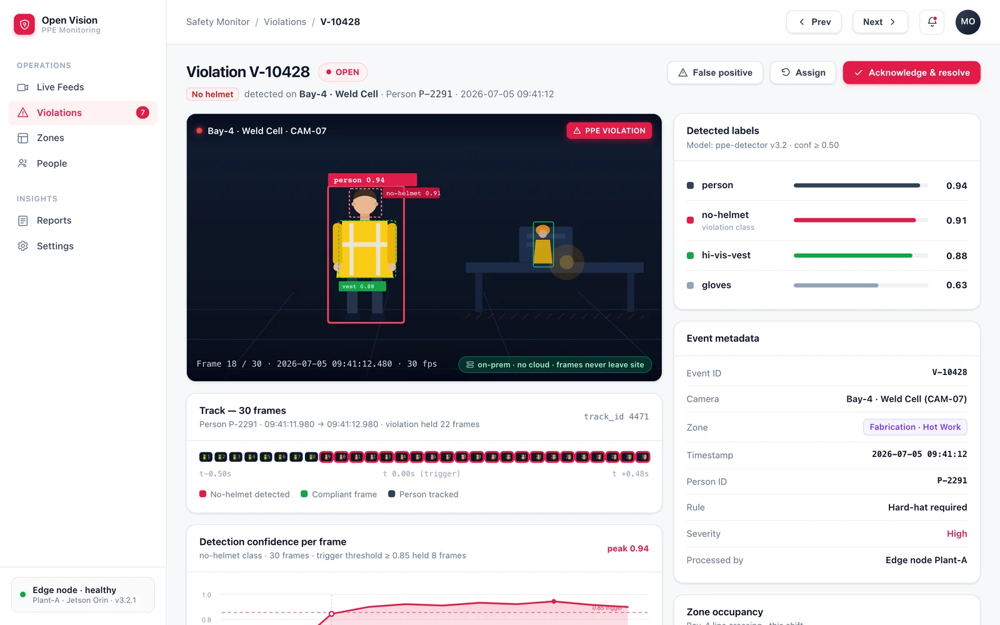

Helmet & vest, every person
Detects hard hats and hi-vis vests on each tracked person and flags anyone missing gear the moment they enter frame.
- Helmet detection
- Hi-vis vest detection
- Per-person compliance state
Boundary surveillance, PPE compliance and intrusion detection from your existing cameras — real-time video analytics that never leave the building. No cloud, no servers, no internet required.
Detection confidence threshold on every person and PPE call.
Nothing is uploaded. All inference and storage stay on your hardware.
No servers, no internet. Deploys as a desktop application on-site.
Open Vision PPE watches your cameras for the specific things that get someone hurt — missing gear, people in places they shouldn't be, and headcount through a boundary.
Detects hard hats and hi-vis vests on each tracked person and flags anyone missing gear the moment they enter frame.
Draw a boundary once. Any person crossing into a restricted zone raises a violation and is logged with the frame and track.
ByteTrack follows each person across frames and counts direction of travel — a live, auditable tally of who went in and out.
A single pipeline turns raw camera frames into compliance events, tracked identities, and a report in your inbox — all on the same machine.
YOLOv8n runs person detection at 320×320 with a 50% confidence threshold, then evaluates PPE and restricted-zone state on each detection.
ByteTrack assigns a stable ID to every person using IoU and a 30-frame history, while InsightFace 512-dim embeddings support face recognition where needed.
Events and counts land in a local SQLite database. Daily PDF and Excel safety reports are generated and delivered over SMTP — no dashboard login required.
Open Vision PPE is a desktop application. Inference, tracking and storage all run locally, so there is no upstream to secure, no bandwidth bill, and nothing to breach off-site.
A live monitor for the floor, and a full trail behind every violation — from the detection box to the auto-generated report.
The safety monitor shows live feeds side by side, with PPE state and restricted-zone overlays drawn on each person in real time.

Open a violation to see the detection boxes, the track filmstrip that identifies the person across frames, and the auto-report trail that gets emailed out.

Built in Python on proven open-source detection and tracking — no proprietary black box, no vendor lock-in.
See Open Vision PPE running on feeds like yours — PPE compliance, restricted zones and IN/OUT counting, entirely on-prem.